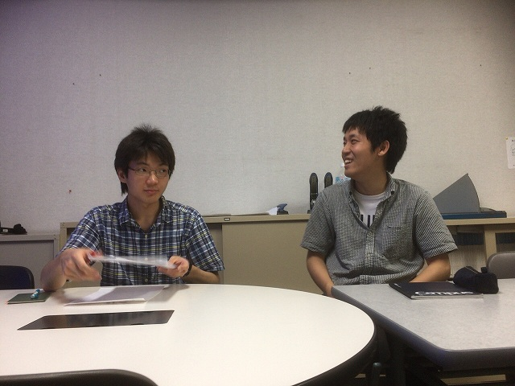
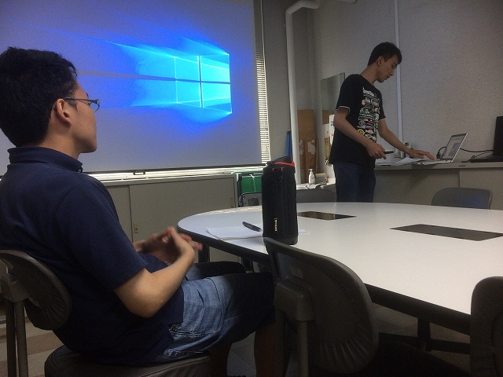
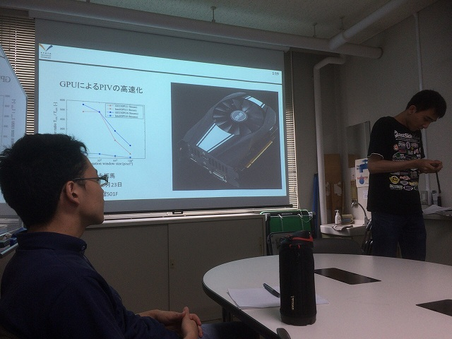
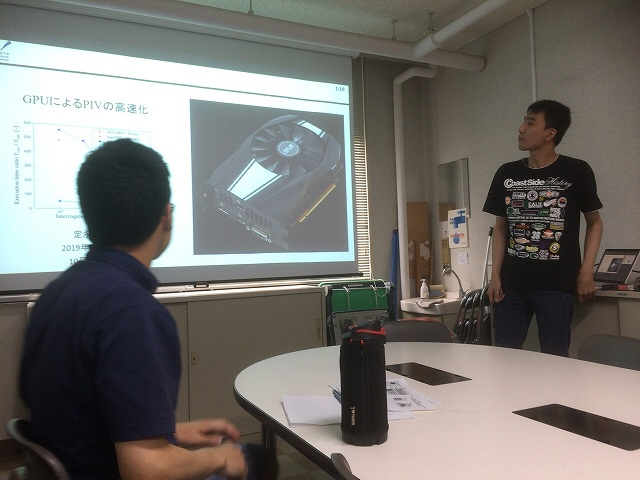
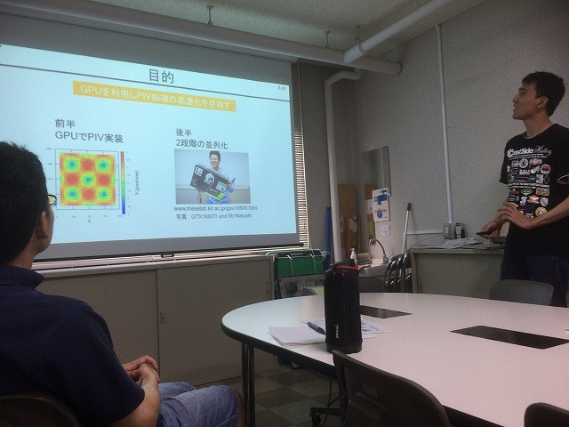
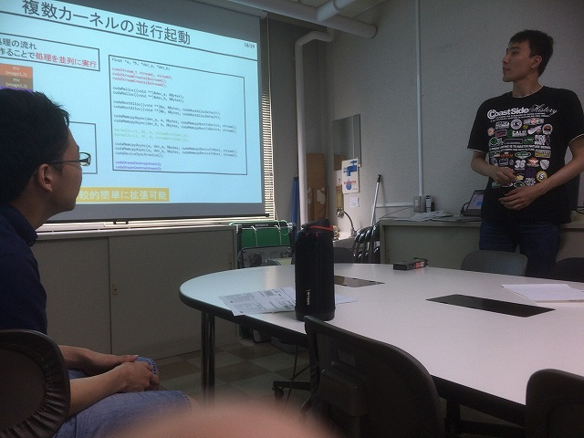

| ・ GPU講座2019 (R01.07.23) | |||
前回はホログラフィでした．その後，M2のN谷さん，B4のM村さん，助教の人が実装して100倍速くなり，もはやGPU前提で研究が進んでいます． 今回はB4のS永さんが講師でPIVについてレクチャーしてくれました．条件によっては500倍とのことで，PIVユーザーの人たちは歓喜です．実装時に嵌まったポイントの解説があり，貴重な内容でした． |
|||
|

PIVユーザーの人たち |

前回の講師と今回の講師 | ||
|

さて |

スタート | ||
|

フリー素材の人ｗ |

もっと速くできますよ！ | ||